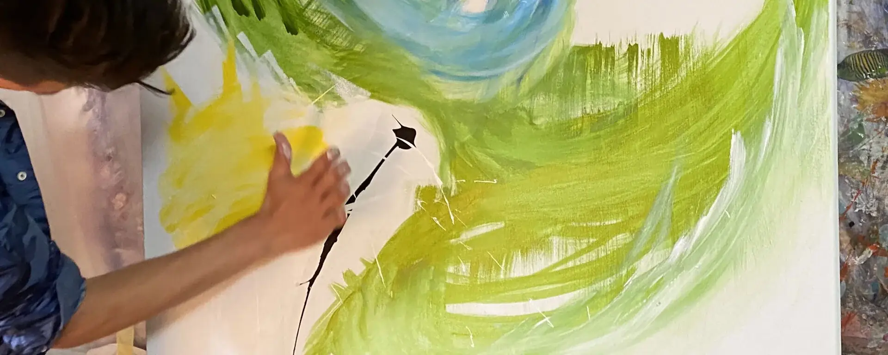
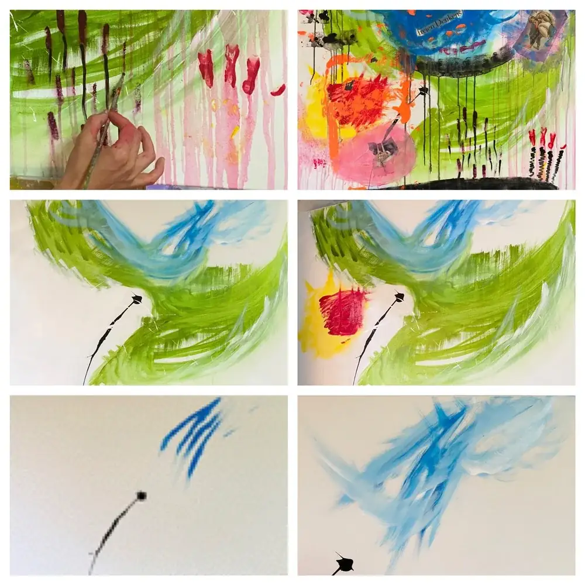
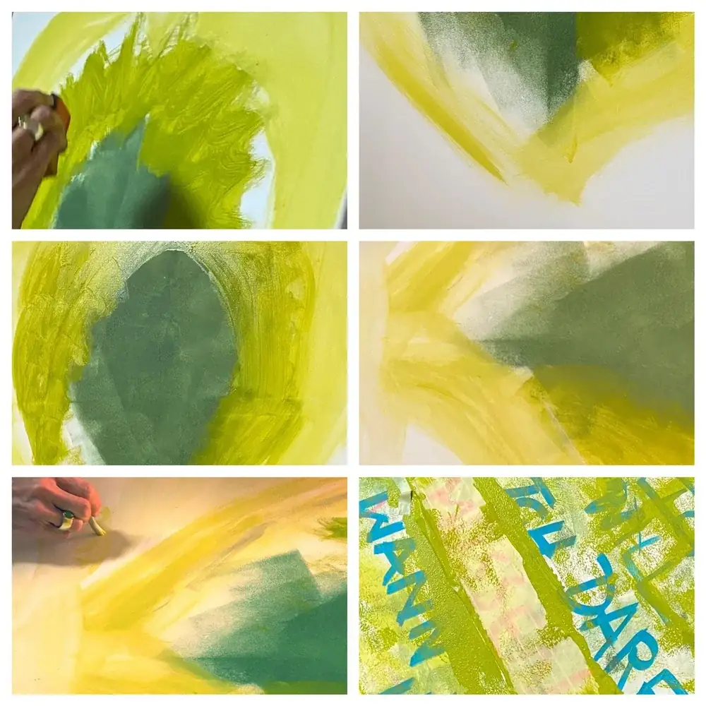
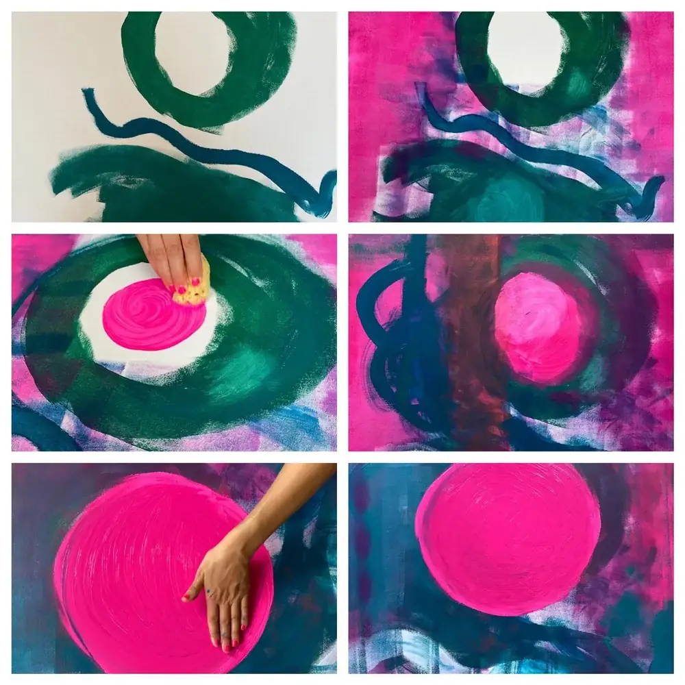
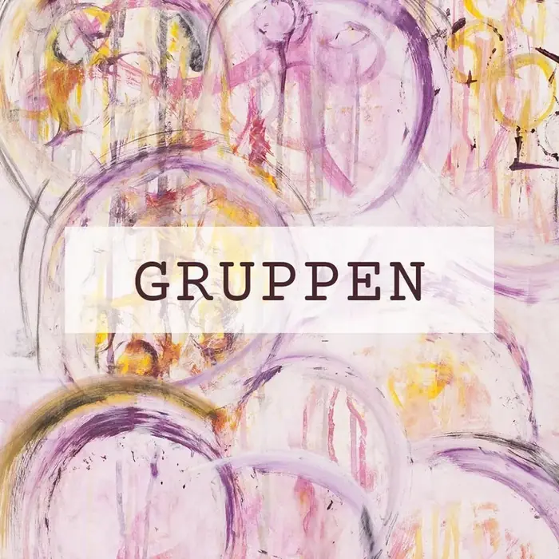
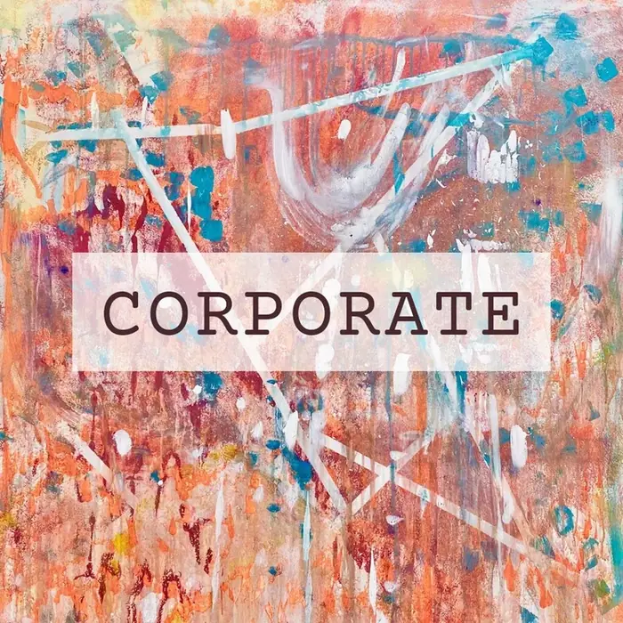
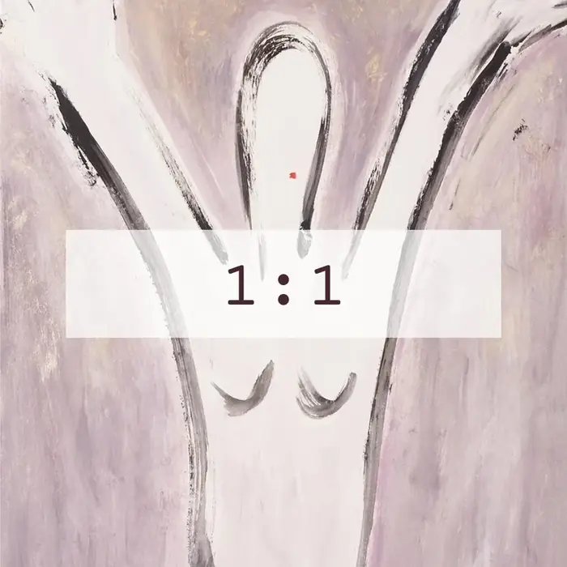
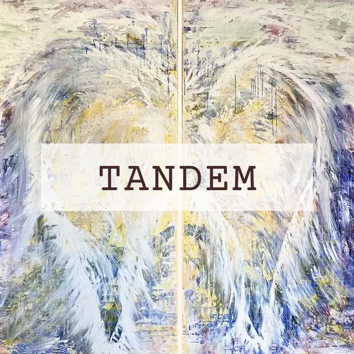
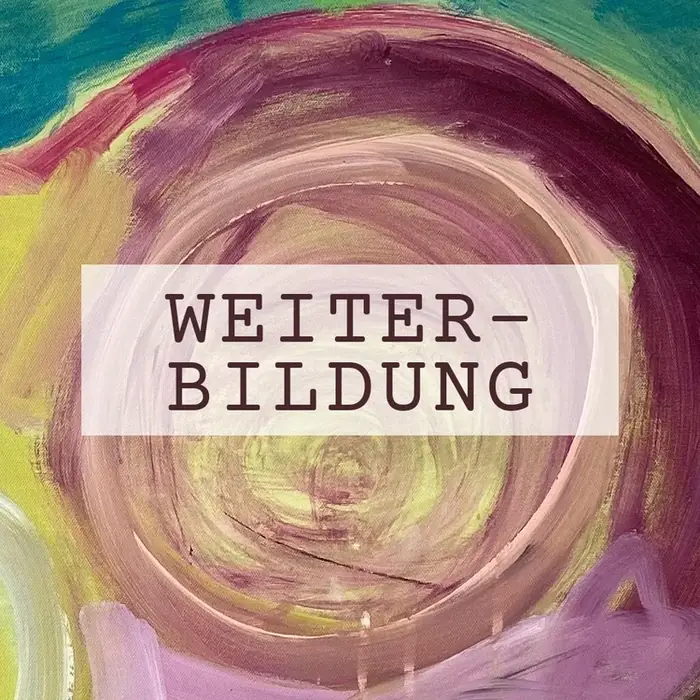
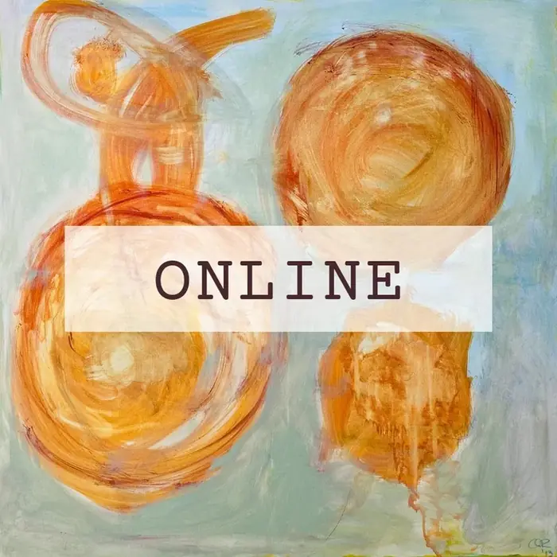

Generative Painting
Die innere Welt mit Farben, Formen und Bewegung frei ausdrücken.
Was es ist
Generative Painting verbindet bewusste Absichten mit dem kreativen Potenzial des Nicht-Wissens. So entstehen ganzheitliche Lösungen, die man sich nicht ausdenken kann.
Das Gehirn konstruiert unsere individuelle Realität selbst. Beim geführten Malen lenkst du die Aufmerksamkeit bewusst und gestaltest diesen Prozess mit. Neue Gefühle werden in die Leinwand verwoben, das erleichtert den Transfer in den Alltag.
Was es bewirkt
- Innere Hindernisse lösen
- Beziehungen harmonisch gestalten
- Sich liebevoller mit sich selbst verbinden
- Kreatives Potenzial aktivieren
- Veränderungen authentisch umsetzen
So entsteht ein Bild
Drei Verläufe aus Sessions: von der ersten Geste zur Leinwand, die bleibt.



Formate

GruppenWachsen durch gemeinsames Lernen.

CorporateFührungskräfte- und Organisationsentwicklung.

1:1 SessionIntensive Einzelbegleitung.

TandemKonfliktklärung und Paarberatung.

WeiterbildungFür Coaches und Beratende.

OnlineUnabhängig vom Ort.
Im Atelier
- Wie
- Auf Leinwand mit Acrylfarben. Maltechnische Hilfe gibt es, wenn du sie brauchst.
- Vorerfahrung
- Keine. Du brauchst Neugier, Offenheit und Freude am Gestalten und Ausprobieren.
- Wo
- Online, im Coaching-Atelier oder an inspirierenden Orten.
- Sprachen
- Deutsch, Englisch, Französisch
- Preis
- Folgt
- Anmeldung
- Per E-Mail, Adresse folgt